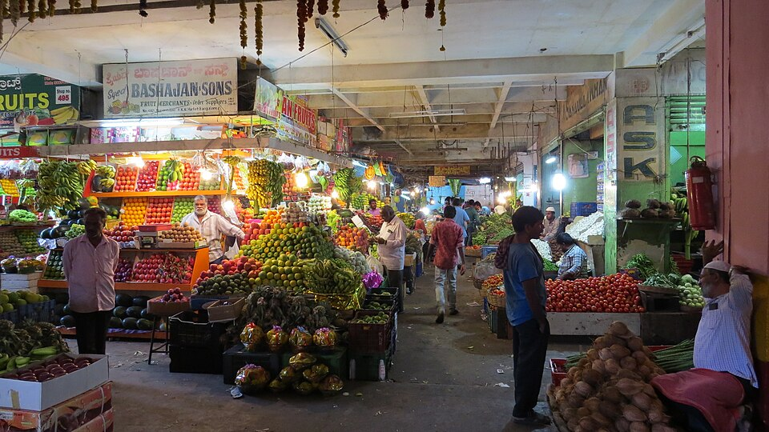
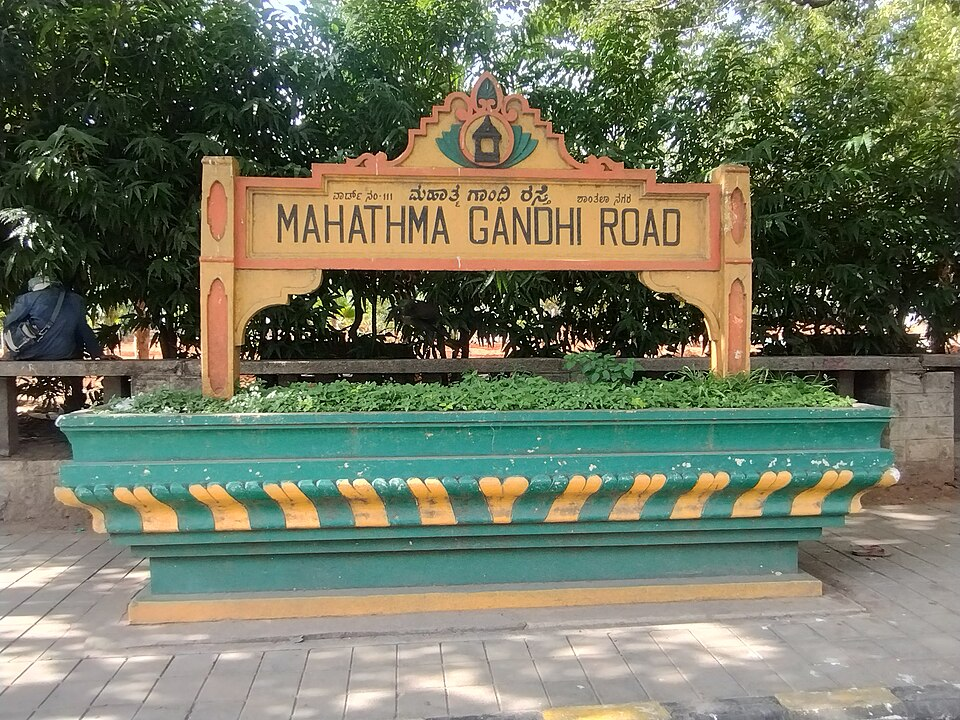
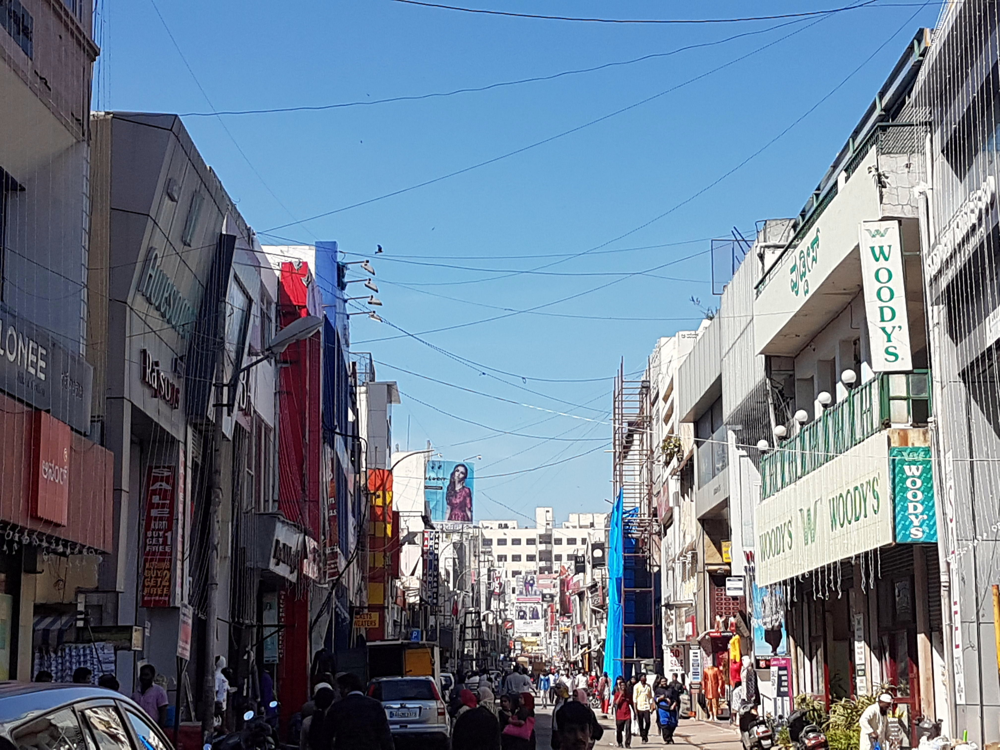
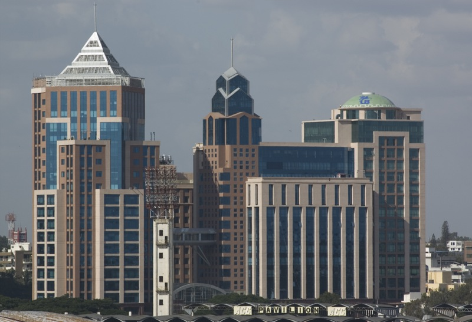

Markets & Commercial Hubs
Click any landmark card below to open an interactive view with multiple photos, history, timings, and visiting details.

KR Market (City Market)
One of India's oldest wholesale markets, famous for its vibrant flower trade, fresh produce, and bustling energy.
View Details & Gallery →
MG Road & Brigade Road
Bengaluru's most iconic commercial boulevard with premium retail, cafés, bookshops, and vibrant street life.
View Details & Gallery →
Commercial Street
A kilometre-long bustling shopping hub for affordable fashion, accessories, electronics, and delicious street food.
View Details & Gallery →
UB City Mall
Bengaluru's premier luxury mall with international brands, gourmet dining, and art galleries in a modern glass tower.
View Details & Gallery →